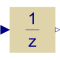

UnitDelayUnit Delay Block |

|
Information
This information is part of the Modelica Standard Library maintained by the Modelica Association.
This block describes a unit delay:
1
y = --- * u
z
that is, the output signal y is the input signal u of the previous sample instant. Before the second sample instant, the output y is identical to parameter yStart.
Parameters (3)
Outputs (2)
| sampleTrigger |
Type: Boolean Description: True, if sample time instant |
|---|---|
| firstTrigger |
Type: Boolean Description: Rising edge signals first sample instant |
Connectors (2)
| u |
Type: RealInput Description: Connector of Real input signal |
|
|---|---|---|
| y |
Type: RealOutput Description: Connector of Real output signal |